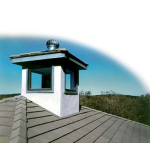
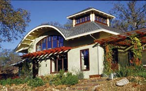
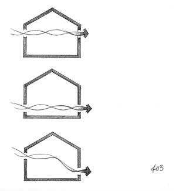
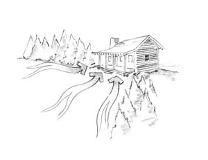
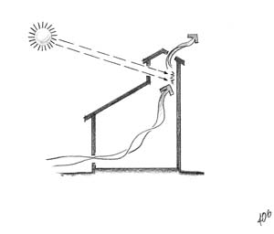

Forget Ac! Cool Your Home Naturally
Slash (or eliminate) your air conditioning bills with these simple tips and remodeling recommendations.
By Carol Venolia and Kelly Lerner
August/September 2007
Space cooling and heating can account for up to 45 percent of your total home energy use every year, but there are numerous strategies you can employ to reduce cooling costs. For instance, a ceiling fan used in conjunction with air conditioning lets you raise the thermostat by as much as 4 degrees while maintaining the same comfort level in a room. The U.S. Department of Energy estimates that each degree below 78 degrees on your thermostat will increase your air conditioning bill by 8 percent. You also can use natural ventilation to capture and create breezes, or to help you take advantage of nighttime drops in temperature.
Other money-saving ideas include minimizing heat gain, weather sealing, insulating, window shading and glazing, roof lightening and landscaping (see “Best Bets for Passive Cooling”). Because natural ventilation is one of the most cost-effective ways to cool your home, we’ll examine it here in greater detail.
Natural Ventilation
Natural ventilation makes the most of air motion to cool you and your home. This is the primary passive cooling strategy in all climate zones, but the nuances of its application vary by region. Understanding seasonal wind patterns will help you adjust your window openings, outdoor spaces and windbreaks to increase your comfort without relying on nonrenewable fuels.
Take some time to think about the breezes and winds around your home:
- At what time of day and year are the winds strongest?
- From which direction does your prevailing wind come (the one that blows most of the time, when there are no storms)?
- From what direction do storms come?
- Is there a noticeable breeze or wind most of the year? Does it vary much from season to season?
- Do your local breezes shift daily?
- Is local air movement influenced by geographic features or landscape elements?
There are several ways to learn about local wind direction and intensity, such as observing for yourself (at different times of the day and year), accessing weather data and asking local farmers or other people who work outdoors what they observe.
You also can hang a windsock in your yard. A friend who lives near the ocean has done this; she and her family enjoy being aware of changes in the wind’s direction and force, making them feel more like part of their natural surroundings: “Our prevailing wind comes from the northwest, so most of the time the windsock points to the southeast. But sometimes it suddenly turns and points north, and then we know there’s a storm coming in.” A weather vane on your home or garage can provide the same information.
Becoming familiar with local weather patterns can help you decide on a natural cooling strategy. In hot humid climates, for example, maximum airflow combined with shading is the dominant strategy. In hot arid climates, ventilation is welcome in the hot seasons, and night cooling of thermal mass is particularly useful due to lower nighttime temperatures. In cold climates with cool summers, there may be little need for enhanced natural ventilation. Many temperate and mixed climates will require a variety of tricks as the seasons move from one extreme to another. As you read on, think about your own climate zone and your experiences living there; focus on the approaches that feel most relevant to your situation, and see how you might improve the existing relationship between your home and the breezes.
Air Flow and Your Home
Now look at your house to assess how air moves through it. You can make basic observations on your own, but you may want to bring in a professional for a more technical assessment. Consider the following points:
- What kind of windows does your house have: casements, double-hung or fixed?
- Does your house have other ventilation openings (that is, vents, exhaust fans or turbine ventilators, a cupola)?
- Are there operable windows or other vents on opposite ends of your house? Are some high and some low?
- Can you open enough windows to provide good ventilation in hot weather?
- Does your landscaping funnel breezes to your house in summer and protect it from cold winter winds?
- Does your house’s enclosure have cracks that admit cold air in winter or hot air in summer?
- How high are your ceilings? Do they allow warm air to collect high in the room, which can be a blessing in summer and a problem in winter?
- Do vents or fans exhaust unwanted air, such as unpleasant smells and excess moisture?
- Even with windows open, are there “dead air” zones in your house?
Natural Ventilation Techniques
Once you’ve mapped your local wind patterns and your home’s airflow characteristics, you can use a host of tricks to improve ventilation for cooling. If your home has appreciable thermal mass (dense materials that conduct heat slowly, such as stone, concrete, brick or ceramic tile), or if you choose to add some, you will want to use these ventilation techniques to cool the mass at night in the hot season, so it can absorb unwanted heat from the air and away from your body during the day.
The openings that allow air to pass through your home needn’t always be windows. We ask windows to do many things: admit light, welcome solar heat, frame views and provide ventilation. But these functions often have conflicting requirements. In hot arid climates, for example, breezes are more desirable than sunlight. Sometimes the best solution - particularly in a remodel situation - is to provide vents that are separate from windows. Adding sun protection, insect screens, louvers, insulated doors or a combination of these will allow you to fine-tune your new vents. A good example from historical buildings is a cupola with louvered vents all around that allow warm air to escape as it rises, inducing air movement through the whole house.
We can learn a lot from vernacular buildings that make the best use of nature’s cooling ventilation for their particular climate. In the South, shuttered verandas, high ceilings, operable transoms, two-story porches and dogtrot houses with open breezeways down the center maximize both cross ventilation and shade to counter the humid heat. In the Midwest, summer kitchens keep the heat of cooking out of the home, while screened sleeping porches put warm human bodies in the path of nighttime breezes. In desert regions, the thick earthen walls of adobe homes protect the interior from harsh sun during the day; at night the cool breezes sweep away any lingering warm air.
Now let’s examine some of the most common forms of natural ventilation:
Cross ventilation. When air flows into a room from one side and out the other, you’ve got cross ventilation. As with any air movement, cross ventilation can cool your body by speeding up the evaporation of sweat, and it can cool your home by removing hot air, especially at night, if the incoming outdoor air is cool.
Any room with openings on opposite sides can be cross-ventilated if the openings are large enough. But most homes are at least two rooms deep in many places, so you also need to look at airflow through the whole house in order to ventilate the rooms effectively. Think of your house as a system of corridors and doorways that can channel air from one end to the other.
Looking at the air motion notes you’ve made, see if the combination of prevailing breezes, house orientation, room layout and openings (windows and other vents) could be improved to make the best use of those breezes. Are there air inlets on the windward side and outlets on the leeward side? If your home isn’t oriented to face the prevailing breeze, you can use landscaping or wing walls on the windward side of your house to encourage the wind to approach your inlets head-on.
As you plan to make changes in your house’s air inlets and outlets, consider these guidelines:
- Openings in opposite walls allow maximum air movement.
- Openings in adjacent walls create air turbulence, increasing the cooling effect.
- A combination of low inlets and high outlets can achieve the greatest scouring of room air. This strategy is especially useful for night cooling of thermal mass floors.
- If you install new openings, make sure the air moves around the people in the room in order to best cool them. Having either some low and some high openings or all openings at a mid-height should achieve the desired effect.
Finally, you can enhance the effectiveness of cross ventilation by naturally cooling the air before it enters your home. Shade, plantings or water (in arid climates), in the form of a pond, fountain or mister, all can remove heat from the air. When located on the windward side of your home, these features will increase your indoor comfort in hot weather.
The chimney effect. If you live where breezes are rare, or just a bit too gentle, you can use the “chimney” or “stack” effect to enhance air movement. The chimney effect is driven by the rising of warm air; when air is heated, it expands, becomes lighter and rises. If that rising warm air is allowed to escape high in a structure, it will be replaced by cooler (heavier) air entering lower in the structure.
The rate of air movement is affected by the vertical distance between inlets and outlets, the size of the openings, and the difference in air temperature from the bottom to the top of the chimney; the greater each of these features, the faster the air movement. One advantage of this strategy is that it doesn’t require any particular orientation to the prevailing breezes; it drives itself.
If you have a tall house - one with multiple levels, high ceilings or both - you may already have the necessary components for taking advantage of the chimney effect. You can use an existing stairwell, atrium, clerestory or other vertical air passage to increase airflow in your house. If you already have the necessary openings at the top and bottom of this airspace, your only task may be to open and close them as needed. Or perhaps you have the needed airspace, and the addition of vents will allow it to function as a thermal chimney.
However, if your house doesn’t have any such features, you can add a chimney or atrium to pull out hot air in summer. You can further enhance the airflow by adding south-facing glass at the top of the chimney to increase the temperature difference from top to bottom, or even by adding a fan to increase airflow when necessary. Placing the outlet on the leeward side of the building will further enhance airflow; as wind blows around the chimney, it will essentially suck air up the chimney. The rate of airflow will be greatest when the cross-sectional area of the chimney remains the same from inlet to outlet.
Wind catchers. If there are breezes in your area - but buildings, vegetation or landforms keep them from getting to your house - there’s another way to bring those breezes indoors. Wind catchers (also known as wind scoops) have been used for centuries in the Middle East, where temperatures are high and buildings are often packed close together. A wind catcher is a tower that rises from the house into the airspace above the rooflines (see illustration below). Its opening faces into the prevailing wind, scooping the breeze down into the rooms below. Capturing air higher up has additional benefits: The air is cooler, the breeze moves faster, and the air carries less dust. When the air is still, well-designed wind catchers can work in reverse, with the chimney effect drawing warm air upward and out of the house.
A wind catcher also can be an elegant solution where windows aren’t oriented well for capturing breezes. The windows may face any which way, but the wind catcher can be precisely oriented to the prevailing breeze. Based on knowledge of wind patterns in your area, you can design a wind catcher with openings in as many directions as you need. For best results, inlets should be at least 8 feet above surrounding obstructions, so take care to integrate this feature with your overall design. If your climate is not hot all year, you may want to add insulated doors to your wind catcher to avoid winter heat loss.
Vegetation and other landscaping. You can use garden plantings and landscape walls to direct, and even cool, a breeze before it enters your home. Rows of leafy trees or tall, dense shrubs can funnel air to open windows, their shade and transpiration cooling the air as it moves through.
Turbine ventilators. The little whirling globes you may have seen on rooftops of older industrial buildings are turbine ventilators. Now making a comeback in naturally cooled homes, these vents use air motion at the roof level to pull air out of the house. While they act somewhat like a fan, they are entirely run by the breeze, which catches the fins of the turbine ventilator and makes it spin, pulling air upward and out through its openings. Cooler air can then enter at a lower level to replace the exhausted air.
Excerpted from Natural Remodeling for the Not-So-Green House: Bringing Your Home into Harmony with Nature, which is highly recommended by Mother Earth, and a finalist for the 2007 Nautilus Book Award given for distinguished contributions to positive social change. To order, visit the authors’ Web site.
Easy Breezes: Ceiling Fans & More
Fans and evaporative coolers cost less to run than traditional air conditioning and can help keep room temperatures comfortable.
Ceiling fans. People tolerate higher temperatures when air is in motion, and ceiling fans are a relatively energy-efficient, affordable way to enhance your house’s natural airflow. For example, ceiling fans allow you to raise your home’s temperature during summer months by 4 degrees and still enjoy the same comfort level. Plus, if you raise the thermostat from 70 to 74 degrees, you’ll reduce air conditioning costs by about 30 percent. And ceiling fans typically use only about as much energy as a 100-watt light bulb. For the most efficient models, search for “ceiling fans” at the Energy Star Web site. Here are some pointers to maximize your comfort when using ceiling fans, while minimizing your energy usage:
- Turn off the fan when nobody’s in the room. Air movement cools people, not rooms.
- Adjust the controls seasonally. In summer, use the ceiling fan in the downward (counterclockwise) airflow direction and position yourself in the path of the moving air; the higher the air speed, the greater the cooling effect. In winter, reverse the motor and operate the ceiling fan in a clockwise direction at low speed to bring warm air near the ceiling down into the
occupied space.
Whole house fans. These fans often can be the most cost-effective way to cool a home in moderate climates, according to Rocky Mountain Institute, a think tank that advises corporations and governments on energy use. Whole house fans circulate air by pulling cool breezes in from lower floor windows and venting air out through the roof. The fans typically cost about $500 to install and have low operating costs. Be sure the whole house fan is properly installed to avoid heat loss in winter.
Evaporative coolers. In the western United States where humidity levels are low, new designs for evaporative (swamp) coolers are a high-performance alternative to conventional air conditioning systems. They use less than one quarter as much energy as air conditioners, and don’t require toxic chlorofluorocarbons (CFCs) or other refrigerants. They cool the air by drawing warm outside air over a wet filter pad. The water then evaporates from the pad to reduce the air’s temperature. A fan circulates the moist, cool air into the room, and pushes warm air out through open windows. Small, room-sized units start at $100 and require no installation, while whole-house systems can cost from $2,000 to $4,000, including installation. Solar evaporative coolers powered by photovoltaic (PV) cells also are now available. The PV cells operate during peak hours of the day, when it’s hottest and electricity is most expensive.
Best Bets for Passive Cooling
According to Rocky Mountain Institute, passive cooling measures can reduce energy bills by up to 40 percent. In addition to natural ventilation, the most effective cooling strategies, in order of increasing cost, are:
- The minimization of indoor heat generation. For example, using energy-efficient light bulbs, reducing hot water use, using smaller and more efficient appliances and scheduling heat-producing tasks (such as clothes drying) for cooler hours of the day.
- Weatherization. Caulking, sealing and weatherstripping all building envelope seams, cracks and openings reduces heating and cooling energy requirements.
- Insulation. Insulating your home or installing heat-reflecting foil reduces heat conduction into your living space.
- Window shading and glazing. Solar radiation passing through windows can contribute 20 percent to heat gain in hot, humid climates. Window shading devices and glazing technology minimize heat gain while transmitting daylight, which reduces electrical lighting needs.
- Roof whitening and attic ventilation. These are two effective measures to reduce heat gain by either reflecting heat away from the roof or flushing heat out through the attic.
- Trees and landscaping. Planting broad, leafy shade trees that block the sun will reduce the amount of solar radiation absorbed by the house.
For more information, visit http://www.rmi.org/.
Natural Cooling Checklist
Low-hanging Fruit: Things You Can Do Today
- Experiment with your existing windows to improve airflow. If your house has casement windows, not only can you get the maximum ventilation area for a given glass area, but you also can use the windows to catch and direct airflow. For double-hung windows, you might want to try opening both sashes partway; this can let cooler air in at the bottom and warmer air out at the top. If you have operable transoms above doors and windows (interior or exterior), use them to exhaust hot air that collects near the ceiling; you might want to add transoms if you don’t already have them. If your house has more than one level, try opening high and low windows to pull air through the house vertically.
- Seal any cracks around the perimeter of your house.
- Tune in to the breeze. When it’s hot, anything that amplifies your awareness of the breeze can have a psychological cooling effect. Hang a wind chime or bell, or plant bamboo or another “rustley” plant in the path of summer breezes, and enjoy the feeling of wind amplification.
More Advanced Steps: Things You Can Do Tomorrow
When you’re ready to take on more substantial projects, consider the following:
- Add new openings in your home’s walls for natural ventilation.
- Create a thermal chimney.
- Landscape to redirect the wind.
- Create outdoor rooms; depending on where it’s located and how it’s designed, an outdoor room can be an island of calm when it’s too breezy, or it can put you in the path of cooling breezes when it’s hot.
|
 IMAGE 45 The turbine ventilator on top of this cupola uses natural wind power to pull warm air up and out of the building. |
 KELLY LERNER This cupola allows warm air to escape and draws cool air in through lower windows.
|
 OLIVIER ROLLIN A house with low and high air outlets achieves the best air flow. |
|
 OLIVIER ROLLIN Landscaping, such as trees and shrubs, can help funnel precooled air into open windows. |
 OLIVIER ROLLIN Wind catchers, such as this four-sided model, capture cooler air from above the roofline and scoop the breeze down into the home. |
 OLIVIER ROLLIN The chimney effect pulls warm air up and out of the home as it pulls cooler air inside. South-facing glass on the chimney increases the difference in air temperature from top to bottom and enhances airflow. |